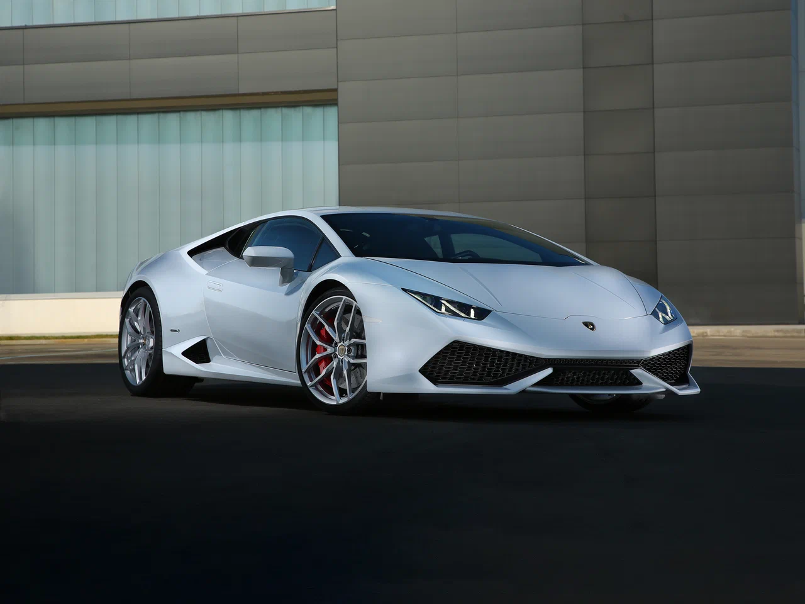
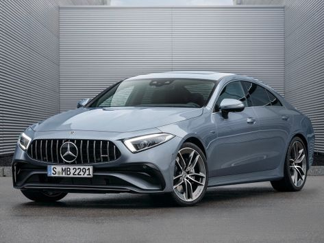

.jpg)
Nissan GTR
Nissan GT-R — суперкар, выпускаемый компанией Nissan Motor. Представлен в качестве серийной модели в Токийском автосалоне 24 октября 2007 года, продажи начались в 2008 году в Японии, затем в США и Европе. В отличие от предшественников, выпускавшихся только для JDM и ограниченным тиражом поставлявшихся в Великобританию, имеется вариант с левым рулём. В 2025 году компания Nissan прекратит производство GT-R. По словам представителей компании Nissan, проблема заключается в невозможности изготовления некоторых деталей из-за сложности сборки. В 2024 году компания Artisan готовит Nissan GT-R R35, стилизованный под R34, с двигателем мощностью 1000 л.с.
Смотреть видео
Lamborgini huracan
Huracán звали бога ветра древних майя, такое же имя носил боевой бык, выступавший на корридах в конце 19 века[1]. Как и в случае с Pagani Huayra (Huayra — ещё одно ветреное божество из Южной Америки), Huracán произносится с пропуском первой буквы (то есть Уракан). Полное официальное название — Lamborghini Huracan LP 610-4. Последние четыре цифры традиционно обозначают мощность в лошадиных силах и количество ведущих колес.
Смотреть видео
Mercedes-Benz
CLS-класс вновь вернул компанию Mercedes-Benz на рынок автомобилей в кузове купе после завершения выпуска Mercedes-Benz W124 (E-класс) в кузове купе в 1995 году. Модель W210 не получила двухдверного варианта, вместо него был создан отдельный CLK-класс на основе удлинённой колёсной базы C-класса. Позиционирующийся как четырёхдверное купе, CLS-класс был разработан американским дизайнером Майклом Финком (англ. Michael Fink) в 2001 году[1]. Согласно пресс-релизу компании Mercedes-Benz, CLS-класс был создан с целью объединить в себе «сильное, волнующее обаяние» купе и «комфорт и практичность» седана[2][3]. В 2003 году на Франкфуртском автосалоне был представлен первый прототип CLS-класса — концепт-кар Mercedes-Benz Vision CLS.
Смотреть видео